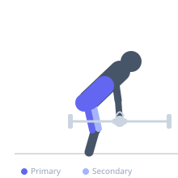
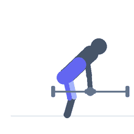

Exercise guide / Suitcase Deadlift
Suitcase Deadlift
The suitcase deadlift is a unilateral variation where a single weight (barbell, dumbbell, or kettlebell) is lifted from the floor at the side of the body, mimicking the action of picking up a heavy suitcase. The offset loading creates a significant lateral anti-flexion demand on the core, requiring the obliques and quadratus lumborum to resist lateral bending throughout the lift. It develops functional carrying strength and core stability simultaneously.
Primary muscles
erector spinae
gluteus maximus
hamstrings
Secondary muscles
internal oblique
external oblique
quadriceps
Stabilizers
trapezius upper
transverse abdominis
Equipment
Dumbbell (Fixed)
Optional
Kettlebell


Starting position
- Stand with a dumbbell or kettlebell on the floor to one side of the body. The weight is positioned beside the hip, not in front. Feet hip-width apart.
Setup
- Begin with a moderate weight — the anti-lateral-flexion demand can be deceiving. Perform equal reps on both sides.
Steps
- Step 1: Stand with the weight to the right side of the body.
- Step 2: Hinge at the hip and bend the knee to reach the weight with the right hand.
- Step 3: Brace the core hard and resist the pull to lean toward the weight.
- Step 4: Drive through the floor and stand tall, keeping the torso perfectly vertical.
- Step 5: Lower under control to the floor. Complete all reps, then switch sides.
Coaching cues
- Stand tall — don't lean toward the weight
- Carry it like you don't want anyone to notice
- Shoulder stays level
Breathing
- Brace before each rep. Exhale at lockout.
Range of motion
- Full hip extension at the top. Weight returns to the floor between reps.
Tempo
- 2-1-2-0
Common mistakes
- Leaning toward the loaded side — the torso must remain vertical throughout
- Reaching too far to the side, compromising the hip hinge pattern
- Using a weight so heavy that lateral flexion cannot be resisted
Safety
- If the torso cannot be kept vertical, reduce the load
- Perform equal volume on both sides to prevent asymmetry development
Training
- strength: 5–8 reps
- hypertrophy: 8–12 reps
- strength: 3–4 sets
- Rest: {'strength': 150, 'hypertrophy': 90}